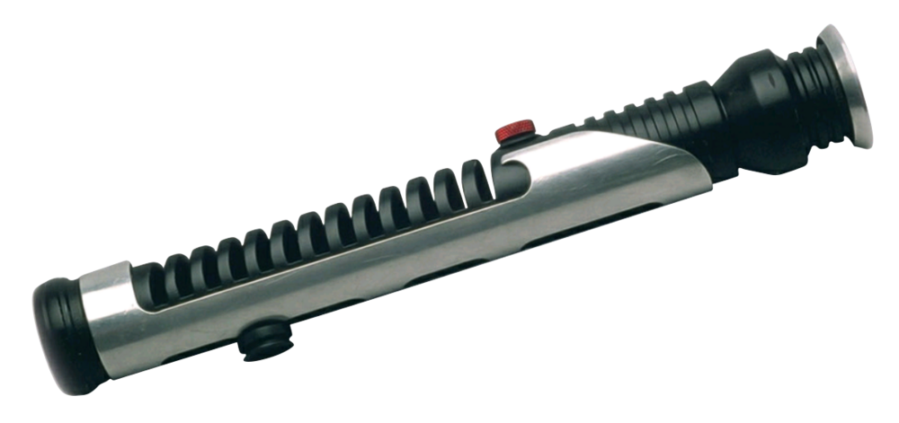

General information
Qui-Gon Jinn was a Force-sensitive highly respected, yet maverick and unconventional Human male Jedi Master, who lived during the last decades of the Galactic Republic and was most notably responsible for discovering Anakin Skywalker, the Chosen One of the Jedi prophecy, and bringing him into the Jedi Order. An adherent of the Living Force, Jinn always kept his focus in the moment and often clashed with and even openly defied the Jedi High Council. Born in 92 BBY, Qui-Gon Jinn was raised at the Jedi Temple on the galactic capital of Coruscant before being apprenticed at the age of ten to Jedi Knight Dooku. After years of training under Dooku, Jinn achieved the rank of Jedi Knight and—after successfully training a Padawan of his own, a farmer's son named Feemor—became a Jedi Master himself. Shortly after that, Jinn took on a second Padawan, a prodigy named Xanatos, whom Jinn had himself discovered and had brought to the Jedi Temple earlier. Jinn was marveled by his Padawan's prowess so much that he turned a blind eye to Xanatos's flaws, namely his desire for power.
However, Jinn was faced with his Padawan's true nature during a mission to stop a civil war on Xanatos's homeworld of Telos IV. During the mission, Xanatos fell to the dark side of the Force and sided with his father Crion, the power-hungry Governor of the planet, who had orchestrated the insurgency to further his own goals. In order to stop the war, Jinn had to confront Crion, who was accidentally killed in the process. Xanatos fled from the planet, swearing revenge on his Master. Devastated by his apprentice's betrayal, Jinn blamed himself for Xanatos's fall, believing in his inability as a Master and renouncing his earlier success with Feemor. Jinn swore never to take another apprentice, until he crossed paths with a Jedi trainee named Obi-Wan Kenobi during a mission to the planet Bandomeer in 44 BBY. Jinn took Kenobi as his third apprentice, starting their long training together. Over the course of the next twelve years, Jinn and Kenobi participated in numerous missions across the galaxy, most notably fighting side by side against Xanatos, who attempted to exact revenge on his former Master. Ultimately, the fallen apprentice took his own life when cornered by Jinn and his new Padawan on Telos, ending that dark chapter in Jinn's life.
In 32 BBY, Jinn and Kenobi were assigned by Supreme Chancellor Finis Valorum as ambassadors to the Trade Federation, which had recently blockaded the planet Naboo in protest against the recent taxation laws introduced by the Galactic Senate. The Trade Federation, led by Viceroy Nute Gunray, however, attempted to dispose of the Jedi, launching an invasion of Naboo. Escaping to the surface of the planet, Jinn and Kenobi saved the Queen of Naboo, Padmé Amidala, agreeing to escort her to Coruscant in order to report the Trade Federation's act of aggression, but their ship's hyperdrive was damaged, forcing them to make a stop for repairs on the lawless world of Tatooine. It was under the twin suns of Tatooine that Jinn discovered Anakin Skywalker, a young slave boy with great Force potential, who helped the Jedi obtain the money to buy the replacement T-14 hyperdrive generator by risking his life at the Boonta Eve Classic podrace. Convinced that the boy was the Chosen One who was supposed to bring balance to the Force, Jinn secured Skywalker's release from slavery and brought him to the Jedi Temple, narrowly escaping from an attack by the Sith Lord Darth Maul in the process.
Believing that Kenobi was ready to become a Jedi Knight, Jinn asked for Skywalker to be assigned as his new apprentice. However, the Jedi Council refused Jinn's request, believing Skywalker to be too old for Jedi training and potentially dangerous. Jinn then accompanied Amidala back to Naboo, helping her to liberate her world from the Trade Federation. During the battle, Jinn and Kenobi faced off against Darth Maul, and the Jedi Master was struck down by the Sith, before Kenobi cut him in half. With his final words, Jinn asked Kenobi to train Skywalker as his Padawan. Following the battle, Kenobi was promoted to the rank of Jedi Knight, and Skywalker was accepted into the Jedi Order. Kenobi fulfilled his promise to his later Master, training Skywalker for the next ten years. Even though Jinn died on Naboo, he continued to have great influence on the future of the Jedi. Having long ago learned how to preserve one's consciousness with the Force, Jinn remained as a Force ghost, eventually passing the secret to Kenobi and Grand Master Yoda. Even though Skywalker fell to the dark side—becoming the Dark Lord of the Sith Darth Vader and leading to the fall of the Galactic Republic, the rise of the Galactic Empire in its stead and the near-destruction of the Jedi Order—he eventually fulfilled the prophecy just as Jinn had foreseen, killing his Sith Master Darth Sidious and returning to the light in his final moments.
Qui-Gon Jinn's lightsaber
Qui-Gon Jinn's lightsaber was wielded by the human Jedi Master Qui-Gon Jinn. Jinn used this lightsaber until the Battle of Naboo, where he was mortally wounded by the Sith Lord Darth Maul. Qui-Gon's apprentice, Obi-Wan Kenobi, then used the same lightsaber to defeat Maul after losing his own.[1] After the battle, Kenobi used it as his own before constructing a new lightsaber. Anakin Skywalker temporarily wielded this weapon as a Padawan before he constructed his own lightsaber.
The weapon was later returned to the Jedi Temple.
Back to home